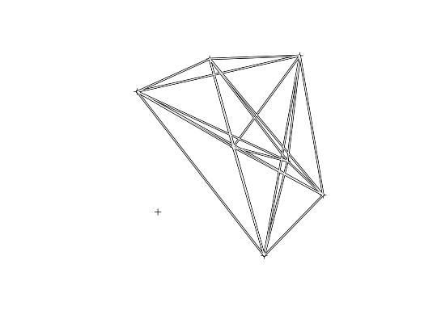
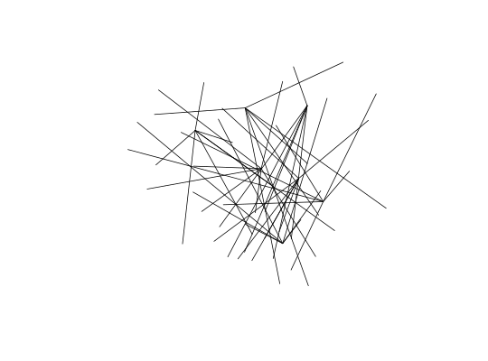

Origin-destination ('OD') flow data is often provided in the form of 1 line per flow with zone codes of origin and destination centroids. This can be tricky to plot and link-up with geographical data. This function makes the task easier.
od2line(flow, zones, destinations = NULL, zone_code = names(zones)[1], origin_code = names(flow)[1], dest_code = names(flow)[2], zone_code_d = NA, silent = TRUE) od2line2(flow, zones)
| flow | A data frame representing the flow between two points
or zones. The first two columns of this data frame should correspond
to the first column of the data in the zones. Thus in |
|---|---|
| zones | A SpatialPolygonsDataFrame or SpatialPointsDataFrame representing origins (and destinations if no separate destinations object is provided) of travel flows. |
| destinations | A SpatialPolygonsDataFrame or SpatialPointsDataFrame representing destinations of travel flows. |
| zone_code | Name of the variable in |
| origin_code | Name of the variable in |
| dest_code | Name of the variable in |
| zone_code_d | Name of the variable in |
| silent | TRUE by default, setting it to TRUE will show you the matching columns |
The function expects zone codes to be in the 1st column of the zones/destinations
datasets and the 1st and 2nd columns of the flow data, respectively.
od2line2 is a faster implementation
(around 6 times faster on large datasets)
that returns a SpatialLines object, omitting the data and working
only when there is no destinations dataset (i.e. when the geography of
origins is the same as that of destinations).
data(flow) # load example data - see ?flow for mor information data(cents) newflowlines <- od2line(flow = flow, zones = cents) newflowlines2 <- od2line2(flow = flow, zones = cents) plot(cents)lines(newflowlines, lwd = 3)lines(newflowlines2, col = "white")nfl_sldf <- SpatialLinesDataFrame(newflowlines, flow, match.ID = FALSE) identical(nfl_sldf, newflowlines)#> [1] TRUE# When destinations are different data(destinations) head(flow_dests[1:5]) # check data#> Area.of.residence WZ11CD All Work.mainly.at.or.from.home #> 920573 E02002361 E33010350 109 0 #> 920575 E02002361 E33010390 38 0 #> 920578 E02002361 E33010468 10 0 #> 920582 E02002361 E33012367 44 0 #> 920587 E02002361 E33012225 34 0 #> 920591 E02002361 E33012368 7 0 #> Underground..metro..light.rail..tram #> 920573 0 #> 920575 0 #> 920578 0 #> 920582 0 #> 920587 0 #> 920591 0head(destinations@data[1:5])#> WZ11CD LAD11CD COWZEW_SG COWZEW_SGN COWZEW_G #> 524 E33012352 E08000035 3 Metro suburbs 3d #> 1936 E33010351 E08000035 2 Top jobs 2c #> 2006 E33012331 E08000035 5 Manufacturing and distribution 5b #> 2712 E33012280 E08000035 3 Metro suburbs 3a #> 2730 E33010390 E08000035 7 Servants of society 7c #> 2799 E33012310 E08000035 3 Metro suburbs 3dflowlines_dests = od2line(flow_dests, cents, destinations = destinations, silent = FALSE)#> #>plot(flowlines_dests)